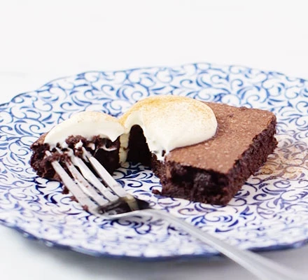

Mulled Wine Brownies

This is an indulgent mulled wine brownie.
Tis the season to be merry, if you can add booze then why would you not! Christmas in a bite these guys, give them a try and if you don't like them, plenty of other people will.
Ingredients
- 100g dark chocolate
- 150g unsalted butter
- 200g light brown muscovado sugar
- 1 large egg and 1 egg yolk
- 100ml red wine
- 50g cocoa powder
- 100g plain flour
- pinch of nutmeg and ground cloves
- ¼ tsp each cinnamon and ginger
Steps
- Heat the oven to 180C/160C fan/gas 4, butter and line the base of a 20cm x 20cm brownie tin with parchment paper. Melt the chocolate in the microwave or in a glass bowl over a pan of simmering water.
- Mix the flour and cocoa powder together with the spices and a pinch of salt - set aside. Using an electric whisk, beat the butter and sugar together until super light and fluffy then whisk in the egg and yolk.
- Pour in melted chocolate, wine and flour mixture and whisk until just combined.
- Pour the batter into tin and bake for 15 mins until just set, don’t worry if there is a slight wobble in the centre, it will set up as they cool. Put into the fridge to firm up.